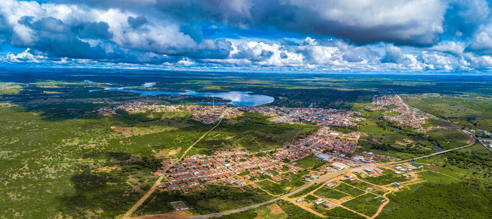

O MUNICÍPIO
São Paulo do Potengi é um município brasileiro do estado do Rio Grande do Norte, localizado a 71 quilômetros da capital potiguar, na região do Agreste Potiguar. De acordo com o censo realizado pelo IBGE (Instituto Brasileiro de Geografia e Estatística) no ano de 2013, sua população é de 17.066 habitantes e sua área territorial é de 221 km².
Além de Canguaretama e Ceará-Mirim, São Paulo do Potengi é um dos três municípios do estado do Rio Grande do Norte que contarão com unidades do Instituto Federal de Educação, Ciência e Tecnologia do Rio Grande do Norte (IFRN).
Fundação: 1943
Gentílico: Potengiense
HISTÓRIA DO MUNICÍPIO
Na primeira metade do século passado, na margem esquerda do Rio Potengi, em território pertencente a São Gonçalo do Amarante, existia um povoado chamado “Juremal”, que se destacava devido ao seu acentuado comércio, inclusive com feira dominical.
O pequeno lugarejo localizava-se bem próximo à margem do Rio Potengi, correndo sempre o risco de enchentes em épocas de inverno, como a que ocorreu em 1909, quando o povoado foi inundado. Temendo a ameaça das águas, Bento Urbano de Araújo, morador e comerciante da localidade, resolveu pedir ao chefe do Juremal, Sr. Avelino Pinheiro, para mudar-se para um local mais afastado do rio. Tendo seu pedido negado, o mesmo foi falar com o Cel. Manoel Maurício Freire, chefe político de Macaíba. Devido a problemas políticos e pessoais entre o chefe político macaibense e Estevam Moura, chefe político de São Gonçalo do Amarante, a resposta foi imediata: “Vamos formar um povoado do lado de Macaíba, próximo ao Juremal”.